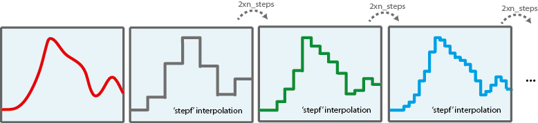

Dynamic Optimization with re-optimization
Contents
Re-optimization is used to iteratively smooth stimulation profiles with stepf interpolation. In this way, large control discretization levels can be achieved with reasonable computational effort. The idea is to solve the DO problem with a a coarse discretization level and from the optimal solution run the optimization with twice the discretization level. Re-optimizations can be run as many times as desired. Re-optimization is typically used in combination with local optimizers.

Options:
- 'run_identifier' to keep different folders for different runs, this avoids overwriting
- 'nlp_solver' to rapidly change the optimization method
- 'reopt' to activate ('on') re-optimization
- 'reopt_local_solver' solver for reoptimization
- 'n_reOpts' number of reoptimizations
Example
The objective is to simultaneously minimize the amplitude of the oscillations and the control effort subject to the oscillator dynamics and maximum and minimum allowed values for the control :
The problem will be first solved with a discretization level of 10 steps. Re-optimizations will be performed till a final discretization of
clear; %=========================== %RESULTS PATHS RELATED DATA %=========================== inputs.pathd.results_folder='vpol'; % Folder to keep results (in Results\) inputs.pathd.short_name='vpol'; % To identify figures and reports %====================== % MODEL RELATED DATA %====================== inputs.model.input_model_type='charmodelC'; % Model type inputs.model.n_st=3; % Number of states inputs.model.n_par=0; % Number of parameters inputs.model.n_stimulus=1; % Number of stimuli inputs.model.st_names=char('y1','y2','y3'); % Names of the states inputs.model.stimulus_names=char('uu'); % Names of the stimuli inputs.model.eqns=char(... % Model 'dy1=(1-y2*y2)*y1-y2+uu',... 'dy2=y1',... 'dy3=y1*y1+y2*y2+uu*uu'); %========================================== % Dynamic optimization problem formulation %========================================== inputs.DOsol.y0=[0 1 0]; %Initial conditions inputs.DOsol.tf_type='fixed'; %Process duration type: fixed or free inputs.DOsol.tf_guess=5; %Process duration %COST FUNCTION inputs.DOsol.DOcost_type='min'; %Type of problem: max/min inputs.DOsol.DOcost='y3'; %Cost functional %CVP (Control Vector Parameterization) DETAILS inputs.DOsol.u_interp='stepf'; %Control definition %'sustained' |'stepf'|'step'|'linear'| inputs.DOsol.n_steps=10; inputs.DOsol.u_guess=0.7.*ones(1,inputs.DOsol.n_steps);% Initial guess for the input inputs.DOsol.u_min=-0.3.*ones(1,inputs.DOsol.n_steps); inputs.DOsol.u_max=1.*ones(1,inputs.DOsol.n_steps); % Minimum and maximum value for the input inputs.DOsol.t_con=0:5/inputs.DOsol.n_steps:5; % Input swithching times, including intial and % final times %================================== % NUMERICAL METHDOS RELATED DATA %================================== % SIMULATION inputs.ivpsol.ivpsolver='cvodes'; inputs.ivpsol.senssolver='odessa'; inputs.ivpsol.rtol=1.0D-7; inputs.ivpsol.atol=1.0D-7; %OPTIMIZATION inputs.nlpsol.reopt='on'; % Re-optimization: 'on' | 'off' inputs.nlpsol.nlpsolver='local_fmincon'; % In this case the problem can be solved with % a local optimizer inputs.nlpsol.reopt_local_solver='local_fmincon'; % Solver used for re-optimization inputs.nlpsol.n_reOpts=3; % Number of re-optimizations % Final discretization level: 80 (2x(2x(2x10))
More information regarding the inputs used in this example can be found here.
%================================ % CALL AMIGO2 from COMMAND LINE %================================ % It is recommended to keep all inputs in a 'problem_file'.m. % AMIGO2 DO task can be called as follows: AMIGO_Prep(inputs); AMIGO_DO(inputs);
***********************************
AMIGO2, Copyright @CSIC
AMIGO2_R2016a [Oct 2015]
***********************************
*Date: 09-Dec-2015
------>Pre processing....this may take a few seconds.
------>Checking inputs....
------> WARNING message
AMIGO_check_model: You did not specify inputs.model.exe_type, standard will be assumed
------> Generating C code ...
------> Mexing files....
Building with 'MinGW64 Compiler (C)'.
D:\AMIGO2_REPO_2014\AMIGO2R2016\Kernel\IVP_solvers\cvodes\C_src4Amigo\src\src_amigo\simulate_amigo_model.c: In function 'simulate_amigo_model':
D:\AMIGO2_REPO_2014\AMIGO2R2016\Kernel\IVP_solvers\cvodes\C_src4Amigo\src\src_amigo\simulate_amigo_model.c:330:16: warning: passing argument 1 of 'mexPrintf' from incompatible pointer type
mexPrintf(stderr,"\nSolver failed at flag = CVode(cvode_mem, tout, y, &t, CV_TSTOP_RETURN);. . .\n");
^
In file included from D:\AMIGO2_REPO_2014\AMIGO2R2016\Kernel\IVP_solvers\cvodes\C_src4Amigo\include\include_amigo/simulate_amigo_model.h:4:0,
from D:\AMIGO2_REPO_2014\AMIGO2R2016\Kernel\IVP_solvers\cvodes\C_src4Amigo\src\src_amigo\simulate_amigo_model.c:1:
C:\MATLAB_R2015b_64/extern/include/mex.h:202:27: note: expected 'const char *' but argument is of type 'struct FILE *'
LIBMWMEX_API_EXTERN_C int mexPrintf(
^
D:\AMIGO2_REPO_2014\AMIGO2R2016\Kernel\IVP_solvers\cvodes\C_src4Amigo\src\src_interface\interface_with_matlab.c: In function 'mexFunction':
D:\AMIGO2_REPO_2014\AMIGO2R2016\Kernel\IVP_solvers\cvodes\C_src4Amigo\src\src_interface\interface_with_matlab.c:200:17: warning: assignment from incompatible pointer type
stats_struct = mxGetPr(plhs[5]);
^
MEX completed successfully.
------>Files generated....
***********************************
AMIGO2, Copyright @CSIC
AMIGO2_R2016a [Oct 2015]
***********************************
*Date: 09-Dec-2015
------>Checking inputs....
The following files have been created:
ans =
D:\AMIGO2_REPO_2014\AMIGO2R2016\Results\vpol\AMIGO_DOcost_vpol.m
ans =
D:\AMIGO2_REPO_2014\AMIGO2R2016\Results\vpol\AMIGO_DOconst_vpol.m
*************************************************************************
------>IMPORTANT!!: Most of the optimization solvers have their own
tunning parameters (options).
Defaults have been assigned in the *NLPsolver*_options
files. You may need to modify those settings for your
particular problem, specially:
- maximum number of function evaluations /iterations,
- maximum computational time
******************************************************************
Solving the NLP problem with Local Optimizer: fmincon
Summary of selected local solver (fmincon) options:
maxeval: 500,
maxtime: 60
>Bounds on the unknowns:
v_guess(1)=0.700000; v_min(1)=-0.300000; v_max(1)=1.000000;
v_guess(2)=0.700000; v_min(2)=-0.300000; v_max(2)=1.000000;
v_guess(3)=0.700000; v_min(3)=-0.300000; v_max(3)=1.000000;
v_guess(4)=0.700000; v_min(4)=-0.300000; v_max(4)=1.000000;
v_guess(5)=0.700000; v_min(5)=-0.300000; v_max(5)=1.000000;
v_guess(6)=0.700000; v_min(6)=-0.300000; v_max(6)=1.000000;
v_guess(7)=0.700000; v_min(7)=-0.300000; v_max(7)=1.000000;
v_guess(8)=0.700000; v_min(8)=-0.300000; v_max(8)=1.000000;
v_guess(9)=0.700000; v_min(9)=-0.300000; v_max(9)=1.000000;
v_guess(10)=0.700000; v_min(10)=-0.300000; v_max(10)=1.000000;
-----------------------------------------------
Initial value problem related active settings
-----------------------------------------------
ivpsolver: cvodes
RelTol: 1e-07
AbsTol: 1e-07
MaxStepSize: Inf
MaxNumberOfSteps: 100000
Local search number: 1
Call local solver: FMINCON
Initial point function value: 5.438108
First-order Norm of
Iter F-count f(x) Feasibility optimality step
0 11 5.438108e+00 0.000e+00 2.066e+00
1 24 4.484670e+00 0.000e+00 7.287e+00 4.706e-01
2 36 3.925545e+00 0.000e+00 5.226e+00 3.635e-01
3 48 3.282925e+00 0.000e+00 4.685e-01 5.632e-01
4 59 3.060656e+00 0.000e+00 6.218e-01 2.906e-01
5 70 3.018759e+00 0.000e+00 4.213e-01 9.967e-02
6 81 3.007951e+00 0.000e+00 1.102e-01 3.486e-02
7 92 3.008417e+00 0.000e+00 1.000e-01 1.155e-02
8 103 2.950689e+00 0.000e+00 1.564e-01 1.624e-01
9 114 2.940141e+00 0.000e+00 7.113e-02 6.490e-02
10 125 2.939752e+00 0.000e+00 2.002e-02 1.238e-02
11 136 2.930926e+00 0.000e+00 2.030e-02 6.290e-02
12 147 2.929122e+00 0.000e+00 4.329e-03 1.828e-02
13 158 2.927106e+00 0.000e+00 1.124e-02 2.906e-02
14 169 2.926420e+00 0.000e+00 1.119e-03 1.247e-02
15 180 2.926250e+00 0.000e+00 1.546e-03 3.580e-03
16 191 2.926237e+00 0.000e+00 4.230e-04 3.956e-04
17 202 2.926237e+00 0.000e+00 4.000e-05 5.997e-05
18 213 2.926206e+00 0.000e+00 1.813e-05 6.907e-04
19 224 2.926205e+00 0.000e+00 8.001e-06 1.554e-05
Local minimum found that satisfies the constraints.
Optimization completed because the objective function is non-decreasing in
feasible directions, to within the selected value of the function tolerance,
and constraints are satisfied to within the selected value of the constraint tolerance.
Local solution function value: 2.926205
Number of function evaluations in the local search: 225
CPU Time of the local search: 1.378443 seconds
The following files have been created:
ans =
D:\AMIGO2_REPO_2014\AMIGO2R2016\Results\vpol\AMIGO_DOcost_reopt1_vpol.m
ans =
D:\AMIGO2_REPO_2014\AMIGO2R2016\Results\vpol\AMIGO_DOconst_reopt1_vpol.m
>>>>> RE-OPTIMIZATION 1
*************************************************************************
------>IMPORTANT!!: Most of the optimization solvers have their own
tunning parameters (options).
Defaults have been assigned in the *NLPsolver*_options
files. You may need to modify those settings for your
particular problem, specially:
- maximum number of function evaluations /iterations,
- maximum computational time
******************************************************************
Solving the NLP problem with Local Optimizer: local_fmincon
Summary of selected local solver (local_fmincon) options:
maxeval: 500,
maxtime: 60
>Bounds on the unknowns:
v_guess(1)=0.091477; v_min(1)=-0.300000; v_max(1)=1.000000;
v_guess(2)=0.091477; v_min(2)=-0.300000; v_max(2)=1.000000;
v_guess(3)=0.830368; v_min(3)=-0.300000; v_max(3)=1.000000;
v_guess(4)=0.830368; v_min(4)=-0.300000; v_max(4)=1.000000;
v_guess(5)=0.999850; v_min(5)=-0.300000; v_max(5)=1.000000;
v_guess(6)=0.999850; v_min(6)=-0.300000; v_max(6)=1.000000;
v_guess(7)=0.915980; v_min(7)=-0.300000; v_max(7)=1.000000;
v_guess(8)=0.915980; v_min(8)=-0.300000; v_max(8)=1.000000;
v_guess(9)=0.638414; v_min(9)=-0.300000; v_max(9)=1.000000;
v_guess(10)=0.638414; v_min(10)=-0.300000; v_max(10)=1.000000;
v_guess(11)=0.366351; v_min(11)=-0.300000; v_max(11)=1.000000;
v_guess(12)=0.366351; v_min(12)=-0.300000; v_max(12)=1.000000;
v_guess(13)=0.162679; v_min(13)=-0.300000; v_max(13)=1.000000;
v_guess(14)=0.162679; v_min(14)=-0.300000; v_max(14)=1.000000;
v_guess(15)=0.039832; v_min(15)=-0.300000; v_max(15)=1.000000;
v_guess(16)=0.039832; v_min(16)=-0.300000; v_max(16)=1.000000;
v_guess(17)=-0.012866; v_min(17)=-0.300000; v_max(17)=1.000000;
v_guess(18)=-0.012866; v_min(18)=-0.300000; v_max(18)=1.000000;
v_guess(19)=-0.012987; v_min(19)=-0.300000; v_max(19)=1.000000;
v_guess(20)=-0.012987; v_min(20)=-0.300000; v_max(20)=1.000000;
Local search number: 1
Call local solver: LOCAL_FMINCON
Initial point function value: 2.926197
First-order Norm of
Iter F-count f(x) Feasibility optimality step
0 21 2.926197e+00 0.000e+00 1.095e-01
1 42 2.902724e+00 0.000e+00 1.143e-01 1.364e-01
2 73 2.901737e+00 0.000e+00 1.382e-01 1.521e-02
3 94 2.883423e+00 0.000e+00 6.590e-02 2.587e-01
4 118 2.883015e+00 0.000e+00 6.424e-02 1.438e-02
5 139 2.882895e+00 0.000e+00 1.074e-02 3.232e-02
6 160 2.882806e+00 0.000e+00 2.505e-03 1.490e-02
7 181 2.882769e+00 0.000e+00 1.000e-03 5.096e-03
8 202 2.882072e+00 0.000e+00 3.120e-03 2.196e-02
9 223 2.881840e+00 0.000e+00 8.703e-04 9.703e-03
10 244 2.881816e+00 0.000e+00 3.896e-04 1.647e-03
11 265 2.881815e+00 0.000e+00 2.000e-04 6.149e-04
12 286 2.881642e+00 0.000e+00 4.810e-04 9.299e-03
13 307 2.881596e+00 0.000e+00 3.123e-04 2.881e-03
14 328 2.881592e+00 0.000e+00 1.281e-04 4.681e-04
15 349 2.881592e+00 0.000e+00 4.000e-05 2.902e-04
16 370 2.881544e+00 0.000e+00 1.270e-04 3.379e-03
17 391 2.881537e+00 0.000e+00 1.643e-05 5.698e-04
18 412 2.881537e+00 0.000e+00 8.000e-06 1.506e-05
Local minimum found that satisfies the constraints.
Optimization completed because the objective function is non-decreasing in
feasible directions, to within the selected value of the function tolerance,
and constraints are satisfied to within the selected value of the constraint tolerance.
Local solution function value: 2.881537
Number of function evaluations in the local search: 413
CPU Time of the local search: 1.038661 seconds
The following files have been created:
ans =
D:\AMIGO2_REPO_2014\AMIGO2R2016\Results\vpol\AMIGO_DOcost_reopt2_vpol.m
ans =
D:\AMIGO2_REPO_2014\AMIGO2R2016\Results\vpol\AMIGO_DOconst_reopt2_vpol.m
>>>>> RE-OPTIMIZATION 2
*************************************************************************
------>IMPORTANT!!: Most of the optimization solvers have their own
tunning parameters (options).
Defaults have been assigned in the *NLPsolver*_options
files. You may need to modify those settings for your
particular problem, specially:
- maximum number of function evaluations /iterations,
- maximum computational time
******************************************************************
Solving the NLP problem with Local Optimizer: local_fmincon
Summary of selected local solver (local_fmincon) options:
maxeval: 500,
maxtime: 60
>Bounds on the unknowns:
v_guess(1)=-0.135466; v_min(1)=-0.300000; v_max(1)=1.000000;
v_guess(2)=-0.135466; v_min(2)=-0.300000; v_max(2)=1.000000;
v_guess(3)=0.352642; v_min(3)=-0.300000; v_max(3)=1.000000;
v_guess(4)=0.352642; v_min(4)=-0.300000; v_max(4)=1.000000;
v_guess(5)=0.706683; v_min(5)=-0.300000; v_max(5)=1.000000;
v_guess(6)=0.706683; v_min(6)=-0.300000; v_max(6)=1.000000;
v_guess(7)=0.925952; v_min(7)=-0.300000; v_max(7)=1.000000;
v_guess(8)=0.925952; v_min(8)=-0.300000; v_max(8)=1.000000;
v_guess(9)=0.999321; v_min(9)=-0.300000; v_max(9)=1.000000;
v_guess(10)=0.999321; v_min(10)=-0.300000; v_max(10)=1.000000;
v_guess(11)=0.999209; v_min(11)=-0.300000; v_max(11)=1.000000;
v_guess(12)=0.999209; v_min(12)=-0.300000; v_max(12)=1.000000;
v_guess(13)=0.944182; v_min(13)=-0.300000; v_max(13)=1.000000;
v_guess(14)=0.944182; v_min(14)=-0.300000; v_max(14)=1.000000;
v_guess(15)=0.826297; v_min(15)=-0.300000; v_max(15)=1.000000;
v_guess(16)=0.826297; v_min(16)=-0.300000; v_max(16)=1.000000;
v_guess(17)=0.688281; v_min(17)=-0.300000; v_max(17)=1.000000;
v_guess(18)=0.688281; v_min(18)=-0.300000; v_max(18)=1.000000;
v_guess(19)=0.547231; v_min(19)=-0.300000; v_max(19)=1.000000;
v_guess(20)=0.547231; v_min(20)=-0.300000; v_max(20)=1.000000;
v_guess(21)=0.414628; v_min(21)=-0.300000; v_max(21)=1.000000;
v_guess(22)=0.414628; v_min(22)=-0.300000; v_max(22)=1.000000;
v_guess(23)=0.297381; v_min(23)=-0.300000; v_max(23)=1.000000;
v_guess(24)=0.297381; v_min(24)=-0.300000; v_max(24)=1.000000;
v_guess(25)=0.198989; v_min(25)=-0.300000; v_max(25)=1.000000;
v_guess(26)=0.198989; v_min(26)=-0.300000; v_max(26)=1.000000;
v_guess(27)=0.120511; v_min(27)=-0.300000; v_max(27)=1.000000;
v_guess(28)=0.120511; v_min(28)=-0.300000; v_max(28)=1.000000;
v_guess(29)=0.061424; v_min(29)=-0.300000; v_max(29)=1.000000;
v_guess(30)=0.061424; v_min(30)=-0.300000; v_max(30)=1.000000;
v_guess(31)=0.020231; v_min(31)=-0.300000; v_max(31)=1.000000;
v_guess(32)=0.020231; v_min(32)=-0.300000; v_max(32)=1.000000;
v_guess(33)=-0.005068; v_min(33)=-0.300000; v_max(33)=1.000000;
v_guess(34)=-0.005068; v_min(34)=-0.300000; v_max(34)=1.000000;
v_guess(35)=-0.016664; v_min(35)=-0.300000; v_max(35)=1.000000;
v_guess(36)=-0.016664; v_min(36)=-0.300000; v_max(36)=1.000000;
v_guess(37)=-0.016728; v_min(37)=-0.300000; v_max(37)=1.000000;
v_guess(38)=-0.016728; v_min(38)=-0.300000; v_max(38)=1.000000;
v_guess(39)=-0.007327; v_min(39)=-0.300000; v_max(39)=1.000000;
v_guess(40)=-0.007327; v_min(40)=-0.300000; v_max(40)=1.000000;
Local search number: 1
Call local solver: LOCAL_FMINCON
Initial point function value: 2.881523
First-order Norm of
Iter F-count f(x) Feasibility optimality step
0 41 2.881523e+00 0.000e+00 3.394e-02
1 82 2.880909e+00 0.000e+00 8.899e-02 5.126e-02
2 124 2.882314e+00 0.000e+00 1.942e-01 2.200e-01
3 166 2.877130e+00 0.000e+00 6.139e-02 1.687e-01
4 207 2.872995e+00 0.000e+00 1.916e-02 1.385e-01
5 248 2.873065e+00 0.000e+00 2.926e-03 8.990e-03
6 289 2.873115e+00 0.000e+00 2.523e-03 5.584e-03
7 330 2.873169e+00 0.000e+00 1.000e-03 4.815e-03
8 371 2.872091e+00 0.000e+00 6.264e-03 3.202e-02
9 412 2.871226e+00 0.000e+00 2.224e-03 3.575e-02
10 453 2.871165e+00 0.000e+00 1.108e-03 7.308e-03
11 494 2.871159e+00 0.000e+00 3.641e-04 3.348e-03
12 535 2.871157e+00 0.000e+00 2.388e-04 1.993e-03
13 576 2.871158e+00 0.000e+00 2.000e-04 9.916e-04
14 617 2.870862e+00 0.000e+00 1.018e-03 2.096e-02
15 658 2.870777e+00 0.000e+00 5.271e-04 7.869e-03
16 699 2.870766e+00 0.000e+00 3.807e-04 1.508e-03
17 740 2.870763e+00 0.000e+00 7.387e-05 2.361e-03
18 781 2.870764e+00 0.000e+00 4.000e-05 2.663e-04
19 822 2.870694e+00 0.000e+00 3.744e-04 8.321e-03
20 863 2.870678e+00 0.000e+00 1.372e-04 2.553e-03
21 904 2.870677e+00 0.000e+00 8.340e-05 4.530e-04
22 945 2.870677e+00 0.000e+00 2.603e-05 2.381e-04
23 986 2.870677e+00 0.000e+00 2.053e-05 1.482e-04
24 1028 2.870677e+00 0.000e+00 1.538e-05 3.029e-05
Local minimum possible. Constraints satisfied.
fmincon stopped because the size of the current step is less than
the selected value of the step size tolerance and constraints are
satisfied to within the selected value of the constraint tolerance.
Local solution function value: 2.870677
Number of function evaluations in the local search: 1029
CPU Time of the local search: 2.102782 seconds
The following files have been created:
ans =
D:\AMIGO2_REPO_2014\AMIGO2R2016\Results\vpol\AMIGO_DOcost_reopt3_vpol.m
ans =
D:\AMIGO2_REPO_2014\AMIGO2R2016\Results\vpol\AMIGO_DOconst_reopt3_vpol.m
>>>>> RE-OPTIMIZATION 3
*************************************************************************
------>IMPORTANT!!: Most of the optimization solvers have their own
tunning parameters (options).
Defaults have been assigned in the *NLPsolver*_options
files. You may need to modify those settings for your
particular problem, specially:
- maximum number of function evaluations /iterations,
- maximum computational time
******************************************************************
Solving the NLP problem with Local Optimizer: local_fmincon
Summary of selected local solver (local_fmincon) options:
maxeval: 500,
maxtime: 60
>Bounds on the unknowns:
v_guess(1)=-0.265814; v_min(1)=-0.300000; v_max(1)=1.000000;
v_guess(2)=-0.265814; v_min(2)=-0.300000; v_max(2)=1.000000;
v_guess(3)=0.007835; v_min(3)=-0.300000; v_max(3)=1.000000;
v_guess(4)=0.007835; v_min(4)=-0.300000; v_max(4)=1.000000;
v_guess(5)=0.250232; v_min(5)=-0.300000; v_max(5)=1.000000;
v_guess(6)=0.250232; v_min(6)=-0.300000; v_max(6)=1.000000;
v_guess(7)=0.459419; v_min(7)=-0.300000; v_max(7)=1.000000;
v_guess(8)=0.459419; v_min(8)=-0.300000; v_max(8)=1.000000;
v_guess(9)=0.634713; v_min(9)=-0.300000; v_max(9)=1.000000;
v_guess(10)=0.634713; v_min(10)=-0.300000; v_max(10)=1.000000;
v_guess(11)=0.775929; v_min(11)=-0.300000; v_max(11)=1.000000;
v_guess(12)=0.775929; v_min(12)=-0.300000; v_max(12)=1.000000;
v_guess(13)=0.883686; v_min(13)=-0.300000; v_max(13)=1.000000;
v_guess(14)=0.883686; v_min(14)=-0.300000; v_max(14)=1.000000;
v_guess(15)=0.959272; v_min(15)=-0.300000; v_max(15)=1.000000;
v_guess(16)=0.959272; v_min(16)=-0.300000; v_max(16)=1.000000;
v_guess(17)=0.996788; v_min(17)=-0.300000; v_max(17)=1.000000;
v_guess(18)=0.996788; v_min(18)=-0.300000; v_max(18)=1.000000;
v_guess(19)=0.998858; v_min(19)=-0.300000; v_max(19)=1.000000;
v_guess(20)=0.998858; v_min(20)=-0.300000; v_max(20)=1.000000;
v_guess(21)=0.998724; v_min(21)=-0.300000; v_max(21)=1.000000;
v_guess(22)=0.998724; v_min(22)=-0.300000; v_max(22)=1.000000;
v_guess(23)=0.994934; v_min(23)=-0.300000; v_max(23)=1.000000;
v_guess(24)=0.994934; v_min(24)=-0.300000; v_max(24)=1.000000;
v_guess(25)=0.962065; v_min(25)=-0.300000; v_max(25)=1.000000;
v_guess(26)=0.962065; v_min(26)=-0.300000; v_max(26)=1.000000;
v_guess(27)=0.912082; v_min(27)=-0.300000; v_max(27)=1.000000;
v_guess(28)=0.912082; v_min(28)=-0.300000; v_max(28)=1.000000;
v_guess(29)=0.852849; v_min(29)=-0.300000; v_max(29)=1.000000;
v_guess(30)=0.852849; v_min(30)=-0.300000; v_max(30)=1.000000;
v_guess(31)=0.787488; v_min(31)=-0.300000; v_max(31)=1.000000;
v_guess(32)=0.787488; v_min(32)=-0.300000; v_max(32)=1.000000;
v_guess(33)=0.718510; v_min(33)=-0.300000; v_max(33)=1.000000;
v_guess(34)=0.718510; v_min(34)=-0.300000; v_max(34)=1.000000;
v_guess(35)=0.648010; v_min(35)=-0.300000; v_max(35)=1.000000;
v_guess(36)=0.648010; v_min(36)=-0.300000; v_max(36)=1.000000;
v_guess(37)=0.577725; v_min(37)=-0.300000; v_max(37)=1.000000;
v_guess(38)=0.577725; v_min(38)=-0.300000; v_max(38)=1.000000;
v_guess(39)=0.509060; v_min(39)=-0.300000; v_max(39)=1.000000;
v_guess(40)=0.509060; v_min(40)=-0.300000; v_max(40)=1.000000;
v_guess(41)=0.443106; v_min(41)=-0.300000; v_max(41)=1.000000;
v_guess(42)=0.443106; v_min(42)=-0.300000; v_max(42)=1.000000;
v_guess(43)=0.380711; v_min(43)=-0.300000; v_max(43)=1.000000;
v_guess(44)=0.380711; v_min(44)=-0.300000; v_max(44)=1.000000;
v_guess(45)=0.322471; v_min(45)=-0.300000; v_max(45)=1.000000;
v_guess(46)=0.322471; v_min(46)=-0.300000; v_max(46)=1.000000;
v_guess(47)=0.268817; v_min(47)=-0.300000; v_max(47)=1.000000;
v_guess(48)=0.268817; v_min(48)=-0.300000; v_max(48)=1.000000;
v_guess(49)=0.219985; v_min(49)=-0.300000; v_max(49)=1.000000;
v_guess(50)=0.219985; v_min(50)=-0.300000; v_max(50)=1.000000;
v_guess(51)=0.176107; v_min(51)=-0.300000; v_max(51)=1.000000;
v_guess(52)=0.176107; v_min(52)=-0.300000; v_max(52)=1.000000;
v_guess(53)=0.137192; v_min(53)=-0.300000; v_max(53)=1.000000;
v_guess(54)=0.137192; v_min(54)=-0.300000; v_max(54)=1.000000;
v_guess(55)=0.103167; v_min(55)=-0.300000; v_max(55)=1.000000;
v_guess(56)=0.103167; v_min(56)=-0.300000; v_max(56)=1.000000;
v_guess(57)=0.073883; v_min(57)=-0.300000; v_max(57)=1.000000;
v_guess(58)=0.073883; v_min(58)=-0.300000; v_max(58)=1.000000;
v_guess(59)=0.049154; v_min(59)=-0.300000; v_max(59)=1.000000;
v_guess(60)=0.049154; v_min(60)=-0.300000; v_max(60)=1.000000;
v_guess(61)=0.028751; v_min(61)=-0.300000; v_max(61)=1.000000;
v_guess(62)=0.028751; v_min(62)=-0.300000; v_max(62)=1.000000;
v_guess(63)=0.012419; v_min(63)=-0.300000; v_max(63)=1.000000;
v_guess(64)=0.012419; v_min(64)=-0.300000; v_max(64)=1.000000;
v_guess(65)=-0.000108; v_min(65)=-0.300000; v_max(65)=1.000000;
v_guess(66)=-0.000108; v_min(66)=-0.300000; v_max(66)=1.000000;
v_guess(67)=-0.009102; v_min(67)=-0.300000; v_max(67)=1.000000;
v_guess(68)=-0.009102; v_min(68)=-0.300000; v_max(68)=1.000000;
v_guess(69)=-0.014838; v_min(69)=-0.300000; v_max(69)=1.000000;
v_guess(70)=-0.014838; v_min(70)=-0.300000; v_max(70)=1.000000;
v_guess(71)=-0.017586; v_min(71)=-0.300000; v_max(71)=1.000000;
v_guess(72)=-0.017586; v_min(72)=-0.300000; v_max(72)=1.000000;
v_guess(73)=-0.017610; v_min(73)=-0.300000; v_max(73)=1.000000;
v_guess(74)=-0.017610; v_min(74)=-0.300000; v_max(74)=1.000000;
v_guess(75)=-0.015166; v_min(75)=-0.300000; v_max(75)=1.000000;
v_guess(76)=-0.015166; v_min(76)=-0.300000; v_max(76)=1.000000;
v_guess(77)=-0.010503; v_min(77)=-0.300000; v_max(77)=1.000000;
v_guess(78)=-0.010503; v_min(78)=-0.300000; v_max(78)=1.000000;
v_guess(79)=-0.003862; v_min(79)=-0.300000; v_max(79)=1.000000;
v_guess(80)=-0.003862; v_min(80)=-0.300000; v_max(80)=1.000000;
Local search number: 1
Call local solver: LOCAL_FMINCON
Initial point function value: 2.870653
First-order Norm of
Iter F-count f(x) Feasibility optimality step
0 81 2.870653e+00 0.000e+00 8.942e-03
1 162 2.872970e+00 0.000e+00 4.099e-02 3.802e-02
2 244 2.877321e+00 0.000e+00 5.675e-02 9.719e-02
3 325 2.873176e+00 0.000e+00 6.675e-03 1.411e-01
4 406 2.873747e+00 0.000e+00 2.620e-03 2.403e-02
5 487 2.873825e+00 0.000e+00 3.518e-03 1.979e-02
6 568 2.873640e+00 0.000e+00 2.784e-03 2.375e-02
7 649 2.873461e+00 0.000e+00 1.073e-03 8.206e-03
8 730 2.873383e+00 0.000e+00 1.000e-03 2.321e-03
9 811 2.870369e+00 0.000e+00 4.623e-03 9.431e-02
10 892 2.869499e+00 0.000e+00 3.499e-03 4.014e-02
11 973 2.869222e+00 0.000e+00 2.393e-03 1.486e-02
12 1054 2.869043e+00 0.000e+00 1.161e-03 2.034e-02
13 1135 2.869085e+00 0.000e+00 7.933e-04 1.034e-02
14 1216 2.869104e+00 0.000e+00 4.578e-04 5.148e-03
15 1297 2.869098e+00 0.000e+00 3.447e-04 2.877e-03
16 1378 2.869088e+00 0.000e+00 2.000e-04 1.752e-03
17 1459 2.868484e+00 0.000e+00 1.436e-03 4.299e-02
18 1540 2.868319e+00 0.000e+00 9.548e-04 1.474e-02
19 1621 2.868274e+00 0.000e+00 6.152e-04 5.393e-03
20 1702 2.868252e+00 0.000e+00 4.372e-04 7.333e-03
21 1783 2.868256e+00 0.000e+00 3.016e-04 2.946e-03
22 1864 2.868257e+00 0.000e+00 1.626e-04 1.285e-03
23 1945 2.868256e+00 0.000e+00 6.249e-05 1.092e-03
24 2026 2.868255e+00 0.000e+00 4.000e-05 6.093e-04
25 2107 2.868109e+00 0.000e+00 5.030e-04 1.702e-02
26 2188 2.868075e+00 0.000e+00 2.177e-04 5.688e-03
27 2269 2.868073e+00 0.000e+00 1.499e-04 1.053e-03
28 2350 2.868072e+00 0.000e+00 8.230e-05 7.387e-04
29 2431 2.868072e+00 0.000e+00 4.324e-05 4.154e-04
30 2512 2.868073e+00 0.000e+00 2.118e-05 2.919e-04
First-order Norm of
Iter F-count f(x) Feasibility optimality step
31 2593 2.868073e+00 0.000e+00 8.656e-06 9.267e-05
Local minimum found that satisfies the constraints.
Optimization completed because the objective function is non-decreasing in
feasible directions, to within the selected value of the function tolerance,
and constraints are satisfied to within the selected value of the constraint tolerance.
Local solution function value: 2.868073
Number of function evaluations in the local search: 2594
CPU Time of the local search: 6.474890 seconds
----------------------------------------
>>>> DYNAMIC OPTIMIZATION:
----------------------------------------
>>>> Best objective function: min = 2.868073e+00
>>>> Best control profile:
>>>> Control u: 1
-0.298523 -0.196016 -0.059061 0.070324 0.191567 0.304602 0.409296 0.505539 0.593266 0.672463 0.743113 0.805382 0.859211 0.904999 0.942610 0.971960 0.990762 0.996396 0.997602 0.997900 0.997796 0.997207 0.995294 0.987969 0.971801 0.950386 0.925568 0.898048 0.868535 0.837172 0.804527 0.770753 0.736266 0.701241 0.665983 0.630667 0.595514 0.560681 0.526336 0.492609 0.459623 0.427482 0.396274 0.366076 0.336949 0.308948 0.282109 0.256470 0.232048 0.208863 0.186919 0.166215 0.146752 0.128518 0.111498 0.095673 0.081026 0.067529 0.055159 0.043883 0.033675 0.024499 0.016328 0.009121 0.002852 -0.002517 -0.007020 -0.010694 -0.013568 -0.015681 -0.017062 -0.017745 -0.017763 -0.017148 -0.015932 -0.014145 -0.011817 -0.008978 -0.005660 -0.001890
>>>> Switching times:
0.000000 0.062500 0.125000 0.187500 0.250000 0.312500 0.375000 0.437500 0.500000 0.562500 0.625000 0.687500 0.750000 0.812500 0.875000 0.937500 1.000000 1.062500 1.125000 1.187500 1.250000 1.312500 1.375000 1.437500 1.500000 1.562500 1.625000 1.687500 1.750000 1.812500 1.875000 1.937500 2.000000 2.062500 2.125000 2.187500 2.250000 2.312500 2.375000 2.437500 2.500000 2.562500 2.625000 2.687500 2.750000 2.812500 2.875000 2.937500 3.000000 3.062500 3.125000 3.187500 3.250000 3.312500 3.375000 3.437500 3.500000 3.562500 3.625000 3.687500 3.750000 3.812500 3.875000 3.937500 4.000000 4.062500 4.125000 4.187500 4.250000 4.312500 4.375000 4.437500 4.500000 4.562500 4.625000 4.687500 4.750000 4.812500 4.875000 4.937500 5.000000
>>>> Final time: 5.000000
>>>> Constraints violation (c<=0): Equality constraints, Inequality constraints, Control constraints
c(1)=0.00e+00;
------>Plotting results....
Sorry, convergence curve plot is not available for local solvers, at the moment
<strong>
------>Results (report and struct_results.mat) and plots were kept in the directory:
</strong><strong>D:\AMIGO2_REPO_2014\AMIGO2R2016\Results\vpol\OD_vpol_local_fmincon_run1</strong>
Click <a href="matlab: cd('D:\AMIGO2_REPO_2014\AMIGO2R2016\Results\vpol\OD_vpol_local_fmincon_run1')">here</a> to go to the results folder or <a href="matlab: load('D:\AMIGO2_REPO_2014\AMIGO2R2016\Results\vpol\OD_vpol_local_fmincon_run1\strreport_vpol_run1.mat')">here</a> to load the results.
See also
References
Balsa-Canto, E.; Banga, J. R.; Alonso, A.A.; Vassiliadis, V.S. Dynamic optimization of chemical and biochemical processes using restricted second-order information. Compt. & Chem. Eng. 2001, 25: 539-546.
AMIGO_htmldoc_inputs(inputs,fullfile(pwd,'html','doinputsr.html'));
Error using fprintf Invalid file identifier. Use fopen to generate a valid file identifier. Error in AMIGO_htmldoc_inputs (line 22) fprintf(fid,'<!DOCTYPE html>\n'); Error in doc_AMIGO_DO_Reopt (line 155) AMIGO_htmldoc_inputs(inputs,fullfile(pwd,'html','doinputsr.html'));